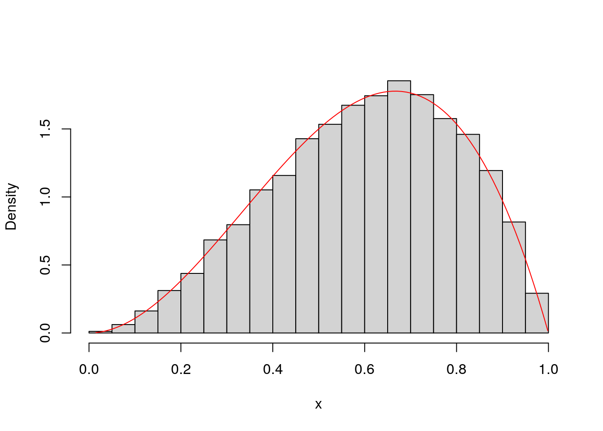

Chapter 11 Control Flow
11.1 Conditional Logic
We discussed Boolean objects in 2. We used these for
- counting up number of times a condition appeared, and
- subsetting.
Another way to use them is to conditionally execute code, depending on whether or truth condition of a Boolean.
In R,
myName <- "Clare"
if(myName != "Taylor"){
print("you are not Taylor")
}
## [1] "you are not Taylor"In Python, you don’t need curly braces, but the indentation needs to be just right, and you need a colon.
my_name = "Taylor"
if my_name == "Taylor":
print("hi Taylor")
## hi TaylorThere can be more than one truth test. To test alternative Boolean conditions, you can add one or more else if (in R) or elif (in Python) blocks. The first block with a Boolean that is found to be true will execute, and none of the resulting conditions will be checked.
If no if block or else if/elif block executes, an else block will always execute. That’s why else blocks don’t need to look at a Boolean. Whether they execute only depends on the Booleans in the previous blocks.
food <- "muffin"
if(food == "apple"){
print("an apple a day keeps the doctor away")
}else if(food == "muffin"){
print("muffins have a lot of sugar in them")
}else{
print("neither an apple nor a muffin")
}
## [1] "muffins have a lot of sugar in them"my_num = 42.999
if my_num % 2 == 0:
print("my_num is even")
elif my_num % 2 == 1:
my_num += 1
print("my_num was made even")
else:
print("you're cheating by not using integers!")
## you're cheating by not using integers!11.2 Loops
One line of code generally does one “thing,” unless you’re using loops. Code written inside a loop will execute many times.
The most common loop for us will be a for loop. A simple for loop in R might look like this
myLength <- 9
r <- vector(mode = "numeric", length = myLength)
for(i in seq_len(myLength)){
r[i] <- i
}
r
## [1] 1 2 3 4 5 6 7 8 9seq_len(myLength)gives us avectoriis a variable that takes on the values found in thevector- Code inside the loop (inside the curly braces), is repeatedly executed, and it may or may not reference the dynamic variable
i
my_length = 9
r = []
for i in range(my_length):
r.append(i)
r
## [0, 1, 2, 3, 4, 5, 6, 7, 8]- Unsurprisingly, Python’s syntax opts for indentation and colons instead of curly braces and parentheses,
- Code inside the loop (inside the curly braces), is repeatedly executed, and it may or may not reference the dynamic variable
i forloops in Python are more flexible because they iterate over many different types of data structures,- The
rangedoesn’t generate all the numbers in the sequence at once, so it saves on memory. This can be quite useful for certain applications. However,ris a list that does store all the consecutive integers.
Loop tips:
- If you find yourself copy/paste-ing code, changing only a small portion of text on each line of code, you should consider using a loop,
- If a
forloop works for something you are trying to do, first try to find a replacement function that does what you want. The examples above just made avector/listof consecutive integers. There are many built in functions that accomplish this. Avoiding loops in this case would make your program shorter, easier to read, and (potentially) much faster. - A third option between looping, and a built-in function, is to try the functional approach. This will be explained more in the last chapter.
- Watch out for off-by-one errors. Iterating over the wrong sequence is a common mistake, considering
- Python starts counting from \(0\), while R starts counting from \(1\)
- sometimes iteration
ireferences thei-1th element of a container - The behavior of loops is sometimes more difficult to understand if they’re using
breakorcontinue/nextstatements
- Don’t hardcode variables. Minimize the number of places you have to make changes to your code. You will change your code consistently, so save your future self some time.
The last point bears repeating: don’t hardcode variables. In statistical programs, there are often “tuning parameters,” for instance that must be changed frequently to affect the overall behavior of the program. If these variables only need to be changed in one location, that saves you a lot of time and gives you more flexibility.
In the example above, the myLength or my_length variable could be referenced in many places throughout the entire program. If you wanted to change the number of iterations in your program (which happens all the time), and you did hardcode the length in a bunch of places throughout the program, you would need to hunt down all those changes!
Python provides an alternative way to construct lists similar to the one we constructed in the above example. They are called list comprehensions. You can incorporate iteration and conditional logic in one line of code.
[3*i for i in range(10) if i%2 == 0]
## [0, 6, 12, 18, 24]You might also have a look at generator expressions and dictionary comprehensions.
R can come close to replicating the above behavior with vectorization, but the conditional part is hard to achieve without subsetting.
3*seq(0,9)[seq(0,9)%%2 == 0]
## [1] 0 6 12 18 2411.3 A Longer Example
11.3.1 Description of Accept-Reject Sampling
An example of an algorithm that uses conditional logic is the accept-reject sampling method (Robert and Casella 2005). This is useful for when we want to sample from a target probability density \(p(x)\), using another distribution called a proposal distribution \(q(x)\).
\(q(x)\) is probably a distribution that is easy to sample from and is easy to evaluate pointwise. For example, a uniform distribution satisfies these criteria because both R and Python have functions that accomplish these two things (e.g. sampling can be done with runif in R and np.random.uniform in Python). \(p(x)\) is generally more “complicated.” If it wasn’t, we would try to find some built-in function for it.
One common way a distribution can be complicated is that it can have an unknown normalizing constant–one that is difficult or impossible to solve using calculus. This happens a lot in Bayesian Statistics, for example.11. We might write down \[ p(x) = \frac{f(x)}{\int f(x) dx}, \] and this is guaranteed to be a probability density function as long as \(f(x) \ge 0\) and \(\int f(x) dx < \infty\), but we might have no idea how to solve the denominator. In this case, \(f(x)\) is easy to evaluate pointwise, but \(p(x)\) is not.
This algorithm makes use of an auxiliary random variable that is sampled from a \(\text{Bernoulli}(p)\) distribution. As long as \(0 < p < 1\), a Bernoulli random variable \(Y\) is either \(0\) or \(1\). The probability it takes the value \(1\) is \(p\), while the probability that it takes the value \(0\) is \(1-p\). A coin flip is a good example use-case for this distribution. Coin flips are commonly assumed to be distributed as\(\text{Bernoulli}(.5)\). At least for fair coins, there is an equal chance that the coin lands heads (i.e. \(0\)) or tails (i.e. \(1\)).
The most difficult part about using this algorithm is that one must calculate the probability parameter of this Bernoulli random variable. This involves calculating (by hand) an upper bound \(M\) for the ratio \(f(x) / q(x)\). This bound has to hold uniformly, meaning that it is a constant number that is greater than the ratio no matter what \(x\) we plug in.
Below is one step of the accept-reject algorithm.
Algorithm 1: Accept-Reject Sampling (One Step)
- Calculate \(M > \frac{f(x)}{q(x)}\) (the smaller the better)
- Sample \(X\) from \(q(x)\)
- Sample \(Y \mid X\) from \(\text{Bernoulli}\left(\frac{f(X)}{q(X)M}\right)\)
- If \(Y = 1\), then return \(X\)
- Otherwise, return nothing
Multiple samples will be required, so this process needs to be iterated many times. There are two ways to do this. If you want to iterate a fixed number of times, you can use a for loop. However, in that case, you will end up with a random number of samples. On the other hand, if you want a nonrandom number of samples, you will probably want a while loop. This is the approach the example below takes. The while loop will continue iterating until a condition is false. In our case, we want to loop until we receive the total number of samples we requested.
11.3.2 A Specific Example
Here is a specific example. Let’s say our target12 is \[ p(x) = \begin{cases} \frac{x^2(1-x)}{\int_0^1 x^2(1-x) dx} & 0 < x < 1 \\ 0 & \text{otherwise} \end{cases}. \] The denominator, \(\int_0^1 x^2(1-x) dx\), is the target’s normalizing constant. You might know how to solve this integral, but let’s pretend for the sake of our example that it’s too difficult for us. We want to sample from \(p(x)\) while only being able to evaluate (not sample) from its normalized version.
Next, let’s choose a uniform distribution for our proposal distribution: \[ q(x) = \begin{cases} 1 & 0 < x < 1 \\ 0 & \text{otherwise} \end{cases} \] We can plot all three functions.

Here’s some Python code that attempts to sample once from \(p(x)\). Sometimes proposals are not accepted. When that happens, the function returns None.
import numpy as np
def f(samp):
"""the unnormalized density"""
return (1-samp)*(samp**2)
def attempt_one_samp():
"""attempts to sample from target distribution, using uniform as a proposal"""
x = np.random.uniform()
M = 4/27
bern_prob_param = f(x)/M
accept = np.random.binomial(1, bern_prob_param) == 1
if accept:
return xdef sample_from_target(num_times):
"""sample num_times from the target distribution"""
samps = []
while len(samps) < num_times:
potential_samp = attempt_one_samp()
if potential_samp is not None:
samps.append(potential_samp)
return samps- we used a
whileloop instead of aforloop because we did not know how many iterations it would take to getnum_timessamples - We are following the Python style guide and using the
is notkeyword to check if something isNone
In chapter 13, we’ll show you the code that you can use to generate the plot below. 
References
The posterior distribution is usually the object of interest in Bayesian statistics. According to Bayes’ Rule, the unnormalized posterior is usually the product of two “easy” functions. However, integrating the product is not always possible!↩︎
This is the density of a \(\text{Beta}(3,2)\) random variable, if you’re curious.↩︎